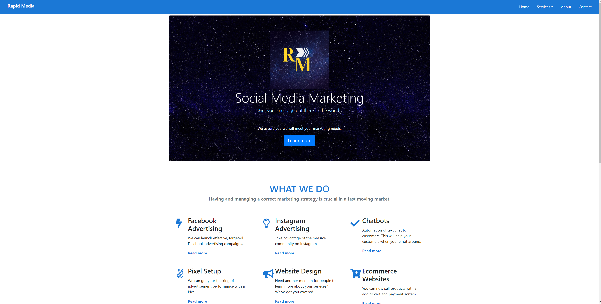
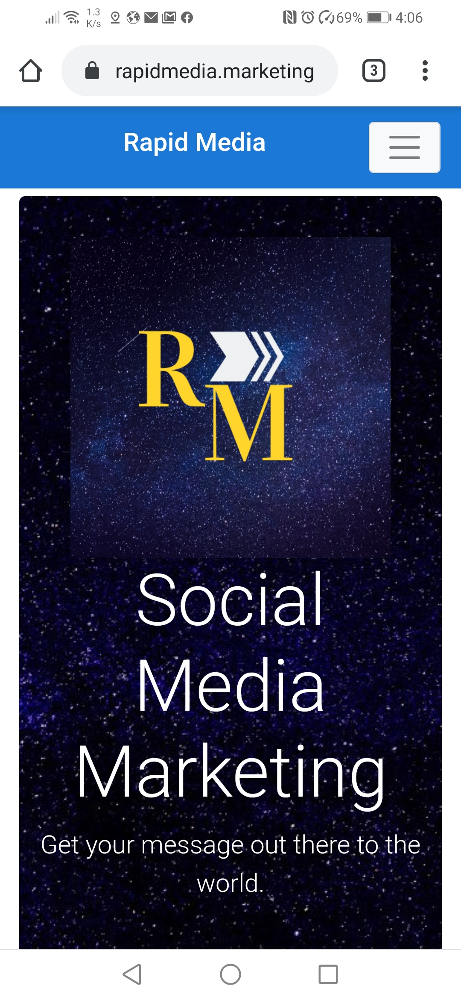

Over the years we have made many projects ranging from front end websites, full stack web development, mobile apps and desktop application development projects.
An example of a website we made is Rapid Media Marketing Social Media Agency (rapidmedia.marketing). You can find out more about that website here. Here is a screenshot of the homepage on desktop:
And on mobile:
Aside from web development projects we have a huge interest in software development with the worlds most powerful and modern programming languages. You can find out more information on our GitHub here to see all of our interests and workings.
On our Github, we have projects developed in C++, Java, Python and Angular. There are even the code for this website and Rapid Media on the Github so you can see our style. Through continuous integration, AWS clones these repositories and builds the projects on their systems to produce a production build. Linked to a domain, these production builds are hosted on a S3 bucket and hosted using Cloudfront, all through the Amplify interface.
We hope you now know a bit more about what we do. If you would like to find out more examples of our projects, please message on any medium listed below. Thank you.